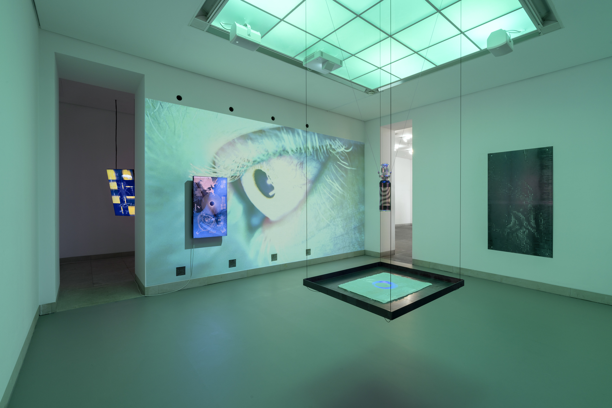
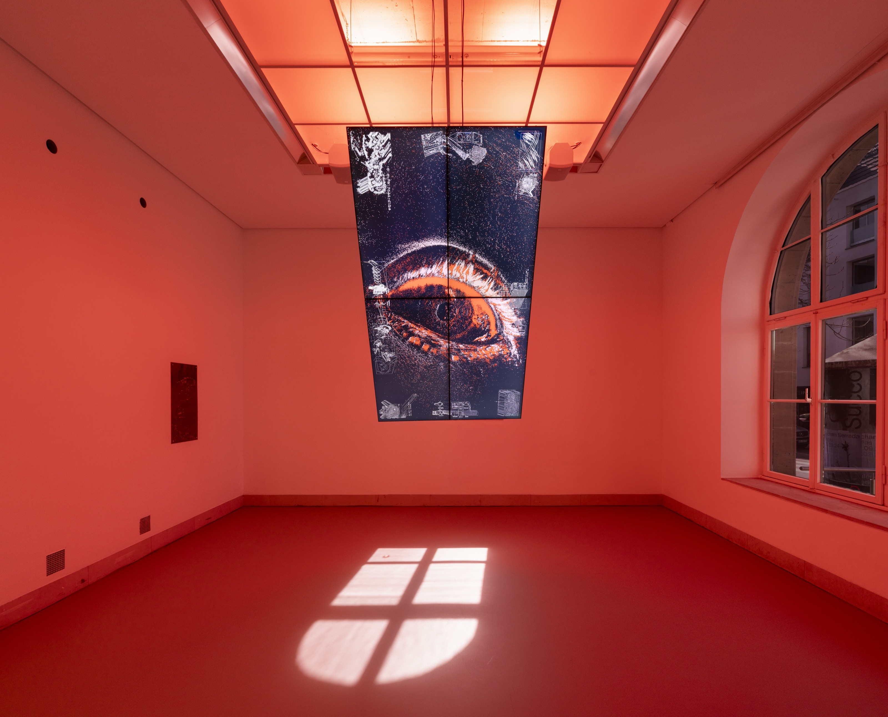
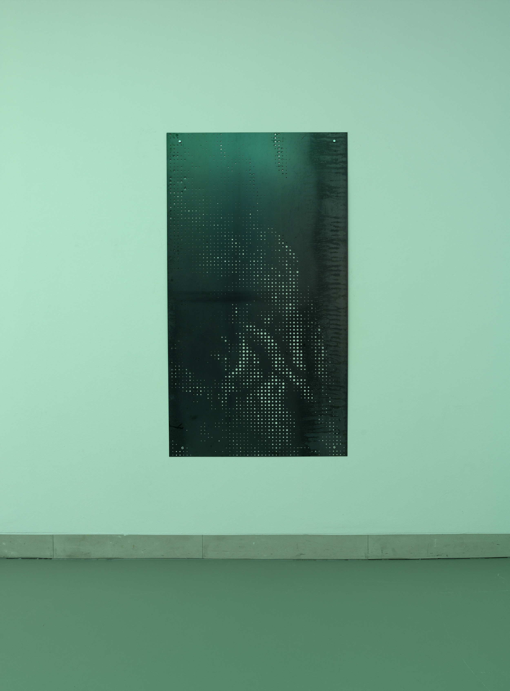

BLINDHÆD is the first multi-media artwork featuring event cameras. Event-based vision is a novel
computer vision technique in which the imaging sensor only responds to local changes in brightness.
Event cameras only react to movement in their visual field. Thereby, they produce radically
different, otherworldly imagery that offers a novel artistic interpretation of vision itself.
Exhibition Room 1, Photo: Wolfgang Günzel

BLINDHÆD is the first institutional solo exhibition of Justin Urbach, which is currently on display
at the Galerie Stadt
Sindelfingen, Germany, until May 25, 2025. Historically, human sight has been
subject to optimization - from glasses to microscopes and telescopes. BLINDHÆD explores this ongoing
transformation of seeing in a world increasingly shaped by technology and body enhancement.
Exhibition Room 2, Photo: Wolfgang Günzel
The first exhibition room presents an artistic rendering of laser eye surgery, while the second room symbolizes the post-enhancement sense of seeing. Event-based vision serves as a metaphor for this transformation: abstract forms emerge from a sea of pixels on a large 2 * 1,2-meter monitor wall, representing a human navigating a new perceptual reality. The human interplay with a robotic arm further illustrates the merging of human and machine, depicting a haunting yet emotional symbiosis. The artwork paints an outlook into the continuation of the constant trend of technological enhancement of our senses. Elements in the exhibition, such as the engraved laser etchings on the surface of the monitors, allude to the irreversibility of such enhancements, further reinforcing our technological dependency.
3D Rendering "through the cracks" in Room 1, 2024
Event-Based Video "BLIND SPOT" in Room 2, 2025

For inquiries about BLINDHÆD, please contact us via E-Mail at awckoenig@gmail.com.
Oxide Crude Steel Laser Punching "BRAIN ROT II", 2024